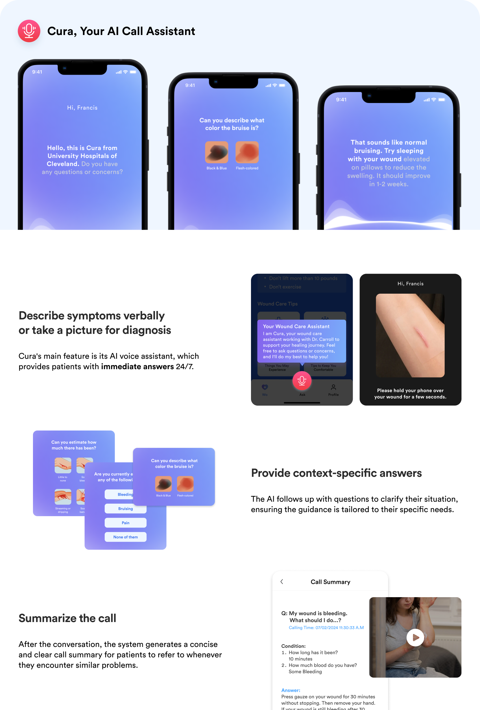

Design
By leveraging insights found from research, we have come up with a system of solutions that would approach the problem in two different ways: proactive and reactive.

01
Our System of Solutions
Instruction Sheet Re-Design
The redesigned instruction sheet is clear, concise, and easy to navigate. Not only did we condense and reorganize information to enhance navigability, we also incorporated illustrations and color for visual learners.
More importantly, we dedicated the last page to location-specific information, highlighting precautions and do’s and don’ts for specific wound locations. The nurses can simply pull up a pre-printed sheet relevant to the patient, not adding too much burden to their everyday work.
More importantly, we dedicated the last page to location-specific information, highlighting precautions and do’s and don’ts for specific wound locations. The nurses can simply pull up a pre-printed sheet relevant to the patient, not adding too much burden to their everyday work.
Reorganizing Information
Image-based Visuals
Information Hierarchy
Location-specific Add-on
Cura App
Cura is a mobile application that provides patients with immediate access to answers and reassurance, helping them stay informed and confident in navigating unexpected problems independently.

See How Our System of Solutions Work Together ↓